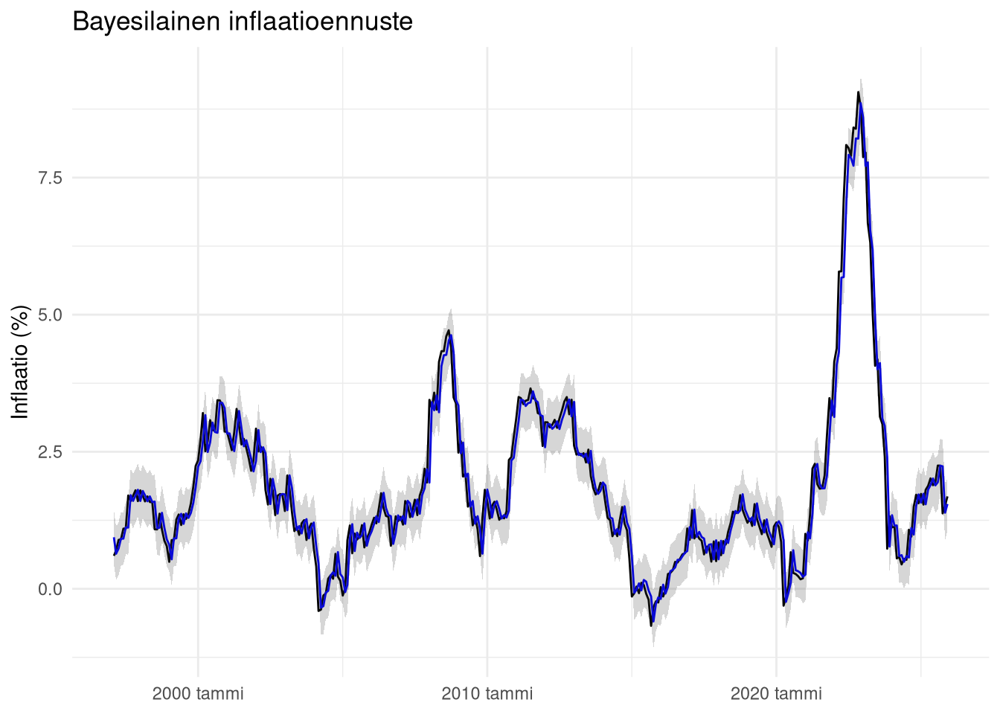

Family: gaussian
Links: mu = identity
Formula: inflation_yoy ~ t + lag1
Data: df (Number of observations: 347)
Draws: 4 chains, each with iter = 2000; warmup = 1000; thin = 1;
total post-warmup draws = 4000
Regression Coefficients:
Estimate Est.Error l-95% CI u-95% CI Rhat Bulk_ESS Tail_ESS
Intercept 0.05 0.10 -0.15 0.25 1.00 3864 3009
t 0.00 0.00 -0.00 0.00 1.00 3898 3088
lag1 0.97 0.01 0.95 1.00 1.00 2496 2177
Further Distributional Parameters:
Estimate Est.Error l-95% CI u-95% CI Rhat Bulk_ESS Tail_ESS
sigma 0.38 0.01 0.35 0.41 1.00 2465 2144
Draws were sampled using sampling(NUTS). For each parameter, Bulk_ESS
and Tail_ESS are effective sample size measures, and Rhat is the potential
scale reduction factor on split chains (at convergence, Rhat = 1).Inflaatio ei ole luku – se on prosessi
Osa 3: Bayesilainen malli ja epävarmuus
R
bayes
makrotalous
inflaatio
Suomen inflaation ennustaminen bayeslaisella mallilla
Inflaatio ei ole piste-ennuste
Edellisessä osassa rakennettiin kaksi baseline-mallia: random walk ja ARIMA. Näiden avulla osoitettiin, että inflaation ennustaminen on yllättävän vaikeaa.
Tämä johtaa keskeiseen ongelmaan:
Piste-ennuste ei kerro riittävästi.
Kun inflaatiosta esitetään arvio kuten
“Inflaatio on ensi vuonna 2,1 %”
jätetään kertomatta olennaisin osa:
- Kuinka epävarma ennuste on?
- Kuinka leveä jakauma on?
- Kuinka todennäköisiä äärimmäiset skenaariot ovat?
Makrotaloudessa nämä kysymykset ovat usein tärkeämpiä kuin itse piste-ennuste.
Tässä osassa inflaatiota mallinnetaan todennäköisyysjakaumana, ei yksittäisenä lukuna.
Miksi bayesilainen malli?
Bayesilainen lähestymistapa mahdollistaa suoraan epävarmuuden mallintamisen.
Sen sijaan, että estimoitaisiin yksi “paras” parametriarvo, estimoidaan parametrien jakauma. Tämä johtaa luonnollisesti ennustejakaumaan.
Tämä on erityisen tärkeää makrotaloudessa, jossa:
- prosessit eivät ole stabiileja
- shokit ovat yleisiä
- epävarmuus muuttuu ajan myötä
Mallinnus toteutetaan paketilla :contentReferenceoaicite:0, joka perustuu Stanin MCMC-estimointiin.
## Mallin rakenne
Inflaatiolle rakennetaan bayesilainen aikarivimalli, jossa huomioidaan:
- trendi
- autoregressiivinen rakenne
- epävarmuus
Mallin perusmuoto on:
\(y_t = \alpha + \beta_t + \phi y_{t-1} + \epsilon_t\)
missä virhetermi mallinnetaan normaalijakaumana.
Bayesilaisessa kehyksessä kaikille parametreille määritellään priorijakaumat.
## Datan valmistelu
Aikamuuttuja \(t\) mahdollistaa trendin mallintamisen. Lag-muuttuja mahdollistaa autoregressiivisen rakenteen.
Mallin estimointi
Mallin estimointi
Mallissa:
trendi \((t)\) captureoi pitkän aikavälin kehitystä
lag-term \((lag1)\) captureoi inertiaa
\(\sigma\) kuvaa epävarmuutta
Posteriorijakauma
Bayesilaisen mallin tuloksena ei saada yksittäisiä parametreja, vaan posteriorijakauma jokaiselle parametrille.
Tämä tarkoittaa, että mallin epävarmuus on eksplisiittisesti mukana analyysissä.
Ennustejakauma
Bayesilainen malli tuottaa jokaiselle ajankohdalle ennustejakauman, ei pelkkää pistettä.
Ennusteen visualisointi

Kuvassa:
musta viiva = toteutunut inflaatio
sininen viiva = odotusarvo
varjostus = epävarmuus
Tämä on keskeinen ero perinteisiin malleihin.
Inflaatio esitetään nyt jakaumana.
Seuraavaksi
Seuraavassa osassa siirrytään arviointiin.
Bayesilaisen mallin ennusteita verrataan baseline-malleihin käyttäen: * CRPS
log score
kalibraatiokäyriä
Keskeinen kysymys on edelleen sama:
Onko bayesilainen malli oikeasti parempi – vai vain monimutkaisempi?
Kaipaatko analyysiä tai onko sinulla projekti, jonka haluat toteuttaa? Ota yhteyttä kristian.vepsalainen@proton.me . Olen käytettävissäsi.